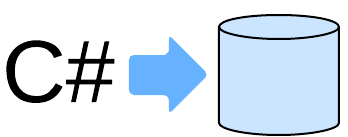
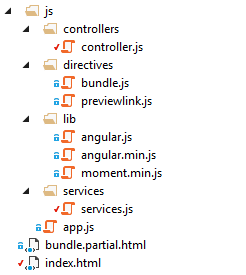
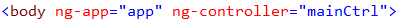
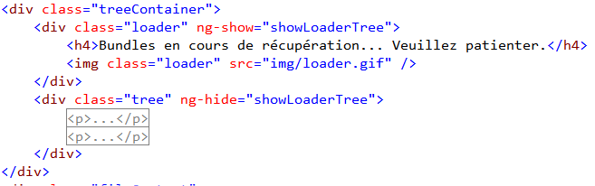
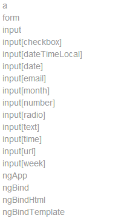

Retour d'expérience
Ecran de Monitoring Collecte Canal+
Simon BUDIN
Sommaire
Contexte du projet
Code First
 Web Api 2
Web Api 2
Angular JS
Contexte du projet
Agence de marketing et communication digitale
Clients de RAPP


Jeu Canal + Collecte
Objectif pour Canal+ : remplir sa base de données d'emails

Voir en vrai
Intervenants du projet
CANAL+
Récupère les prospects, peut déterminer si un prospect est valide
RAPP
Développe le jeu et les services associés
TradeDoubler
Amène des joueurs sur le jeu grâce à des sites affiliés
Problématique principale du projet
CANAL+ doit rémunérer TradeDoubler pour les inscrits au jeu qu'il ne connaissait pas déjà.
Il faut donc régulièrement fournir à TradeDoubler une liste des personnes valides du point de vue de Canal+
La Moulinette
Service Windows tournant chez RAPP sur le serveur du jeu
3 actions quotidiennes principales :
 génère la liste des inscrits du jour et l'envoie à Canal+
génère la liste des inscrits du jour et l'envoie à Canal+- récupère la liste transformée par Canal+ (statuts "déjà inscrit Canal+")
 génère une liste pour TradeDoubler (leads valides) et lui envoie
génère une liste pour TradeDoubler (leads valides) et lui envoie
En pratique...
Les fichiers envoyés sont des fichiers csv et xml sur des serveurs ftp

Fichiers envoyés sur des FTP
 CSV "IN" généré et envoyé à Minuit
CSV "IN" généré et envoyé à Minuit CSV "OUT" reçu vers 12h10
CSV "OUT" reçu vers 12h10- XML généré à la volée (jointure entre csv "OUT" et base locale)
Mécanique de la moulinette

L'écran de monitoring
Objectif
Contrôler la création et les échanges de fichiers
Comment
En maintenant à jour une liste de "Bundles" et de "BundleFiles"
Bundle
Groupe de 3 fichiers quotidiens
Csv "IN", Csv "OUT" et Xml
L'écran de monitoring
- Bundles regroupés par n° de semaine
- Chaque Bundle a une date, un statut et des métadonnées
- Chaque bundle contient une liste de BundleFiles
Panel de prévisualisation
Voir en vrai
Architecture

-
 Entity Framework 6 - Code First
Entity Framework 6 - Code First
-
ASP.Net - Web Api 2
-
AngularJS
EF Code first
Par opposition à "Model First" et "Database First"
Méthodologie ORM fondée sur le code
- POCO
- DbContext
- Conventions
- Implémentations
- Workflow
POCO
Plain Old CLR Object
Aucune référence à l'ORM (ou presque)

Diagramme de classes

Bundle

BundleFile

Enums

DbContext
Brique de base d'EF
Représente une session d'accès à la base de données
On y définit les objets à persister et certains réglages
CollectContext

On hérite de DbContext
Un DbSet par table
Conventions
Code First détecte les clefs grace à des conventions de nommage par défaut
On peut modifier ces conventions si besoin
Convention de clef primaire

Propriété Int ou Guid de format "<NomClasse>Id"
Convention de relations
Il est conseillé de fournir la clef de l'entité liée en plus de la collection
Format : "<NomClasseLiee>Id"
Deux moyens d'ajuster les propriétés du modele
- Dans les POCO directement avec des attributs
- Dans la définition du contexte, Fluent API
Les attributs : Key, StringLength, NotMapped, Required
Il en existe d'autres
La fluent API : contraintes définies en redéfinissant OnModelCreating dans le contexte

Permet des modifications plus poussées
Permet également de ne pas trop "salir" les POCO
Implémentations
Create Bundle

Get & List Bundles


Create Bundle Files
Workflow
Pour créer/modifier la base
On créé des migrations
Une migration décrit le différentiel dans la base de données par rapport à la migration précédente.
Modification du modèle = Migration

En pratique...

3 commandes à connaître
- Enable-Migrations : installation
- Add-Migration <Name> : création d'une migration
- Update-Database : action effective sur la base de données
Enable-Migrations


A ne faire qu'une fois
Fichier Configuration.cs

La méthode Seed peut être utilisée en dev pour préremplir des données
Add-migration


Fichier de migration

Update-Database

Met à jour la base de données
Insert une entrée dans la table __MigrationHistory
Paramètres utiles de Update-Database
- verbose - précisions sur actions effectuées
- force - en cas de perte potentielle de données
- script - prévisualisation du script généré
Migration automatique

Connection Strings
La ConnectionString porte le nom du contexte

Si pas de ConnectionString valide trouvée -> LocalDb

Initializers et réglages

Conseil : désactiver l'initializer par défaut (sinon danger)
Projets de démarrage
Pour éxécuter les commandes
1. Projet de démarrage = celui contenant la connection string
2. 'Défault project' dans PMC

Architecture
-
Entity Framework 6 - Code First
-
ASP.Net - Web Api 2
-
AngularJS
ASP.NET
Web Api 2
Api RESTFul en .NET
- Routing & Actions
- Formatters
- Filtres d'action
Routing & Actions
Routing fondé sur le verbe HTTP
- GET pour récupérer des données (liste ou élément)
- POST : pour enregistrer un nouvel element
- PUT : pour modifier un element
- DELETE : pour supprimer un élément
Il dicte quelle action effectuer dans le contrôleur
Mapping HTTP to Action (msdn)
Deux méthodes de définition du routing
1. Dans WebApiConfig (similaire à ASP.NET MVC)
L'action est déduite par le moteur grâce au verbe HTTP
Action GetAllBundles
Appelée avec /api/bundles/
GET + pas de paramètre = action retournant un IEnumerable
GetAllBundles
2. Par attribut
Appelée avec /api/bundlefiles/[path/to/file.ext]
GET + Paramètre "path" = type de retour object
Paramètre path de type "catch-all" mappant le filepath
GetBundleFileContent
Formatters
Web API fournit permet de paramétrer les types Mime
On peut définir ses propres formats : par exemple csv
XML ou Json ?
C'est le client qui choisit, avec le header HTTP 'Accept'
(AngularJS permet de modifier ce header)
Accept: application/xml
Accept: application/json = JSON
On peut supprimer un Formatter
On peut indenter le JSON (pas par défaut)
Filtres d'action
Permettent d'éxécuter du code par nature transverse :
Logs, authentification, check de session, gestion des exceptions...
Filtre d'autentification
On hérite de BasicAuthenticationFilter qui hérite de AuthorizationFilterAttribute (prédéfini)
Ce filtre scanne les headers HTTP à la recherche d'info d'authentification
On peut appliquer des filtres comme dans ASP.NET MVC à plusieurs niveaux
- Action - attribut au dessus de la méthode
- Contrôleur - attribut au dessus de la classe
- Application - à l'aide du singleton GlobalConfiguration
Filtre en global
Architecture
-
Entity Framework 6 - Code First
-
ASP.Net - Web Api 2
-
AngularJS

HTML enhanced for web apps!
- Hello World
- Vocabulaire et Concepts
- Mise en application
- Les directives
- Les services
Vocabulaire et Concepts
- Modules : équivalents des assemblies .NET
- Views : pages html contenant de la syntaxe AngularJS
- Controllers : établissent le lien entre le "modele" et les Views
- Scopes : contexte de données d'une ou plusieurs Views ayant des propriétés de data-binding bidirectionnel
- Directives : templates HTML (ou "partials") pouvant posséder leur propre scope.
- Services : encapsulent des fonctionnalités, typiquement une API
Tout est fonction
Controllers, Services, Directives ne sont que des fonctions javascript qu'on ajoute à un module

Tout est donc facilement testable
Le $scope
L'objet $scope est géré par AngularJS : c'est une collection observable qu'on injecte dans le controleur
On ne manipule pas le DOM, uniquement le $scope
Mise en application
Nous allons avoir besoin de définir :
- Un module contenant toute l'application
- Un service se chargeant des appels à l'API et de la gestion asynchrone
- Un controlleur permettant de rapatrier les données du service et de remplir le scope
- Une vue affichant notre arbre de bundles à l'aide de directives
MVC ? MVVM ? MVW !
Structure de fichiers
Module et Contrôleur
Le module principal dans app.js
Le controleur
Dépendances à $scope et bundleService injectées
Le service renvoie un objet de type "promesse"
Côté HTML
On charge les scripts
On définit la zone d'influence d'Angular

Le $scope ne pourra être bindé que dans cette section du DOM
Utilisation du scope dans la vue
Que de directives !
Directives
Les directives permettent d'étendre HTML
Elles peuvent représenter de simples fonctionnalités css
Ou permettre de boucler et filtrer une liste
Enfin elles peuvent servir de vue partielle
ng-show et ng-hide
Elles permettent de paramétrer l'affichage d'éléments en fonction d'une valeur booléenne du $scope

ng-repeat + filtre
ng-repeat repète les éléments d'un tableau du $scope
On peut imbriquer les boucles
Et filtrer une liste via une valeur du $scope à la volée
Et beaucoup d'autres !

Directive Custom
Vue partielle pour un Bundle
Le code est rendu très lisible
On peut combiner les directives entre elles
On passe l'objet bundle dans l'attribut "which"
Définition de la directive
L'attribut restrict 'E' définit le type Element
TemplateUrl permet de définir le chemin de la vue partielle
Cette directive encapsule son propre scope
La notation "=which" retrouve l'objet du scope parent
Fichier bundle.partial.html
{{value}} affiche directement une valeur du scope local
On peut charger d'autres directives dans le template
Le service
Il permet d'encapsuler les appels API
C'est une bibliothèque réutilisable
Le bundleService
Le service expose 3 fonctions
On injecte le module $http pour l'Ajax
Le module $q permet une gestion asynchrone élégante
Fonction GetBundles en détails

Fonction GetBundleFileContent

Fin de la présentation
Avez-vous des questions ?
Cette présentation est disponible à l'adresse suivante :
https://github.com/BlueInt32/prez
Bibliographie
Code First
Code first to new Database @ Msdn.com
Web Api
Getting Started with Web Api 2
Angular JS
AngularJS Fundamentals in 60min
Outils
Graphiques : LucidChart
Versionning : Git + Github
Présentation HTML : reveal.js + nodeJS
SublimeText 3
Visual Studio 2013
Adobe Photoshop CS6